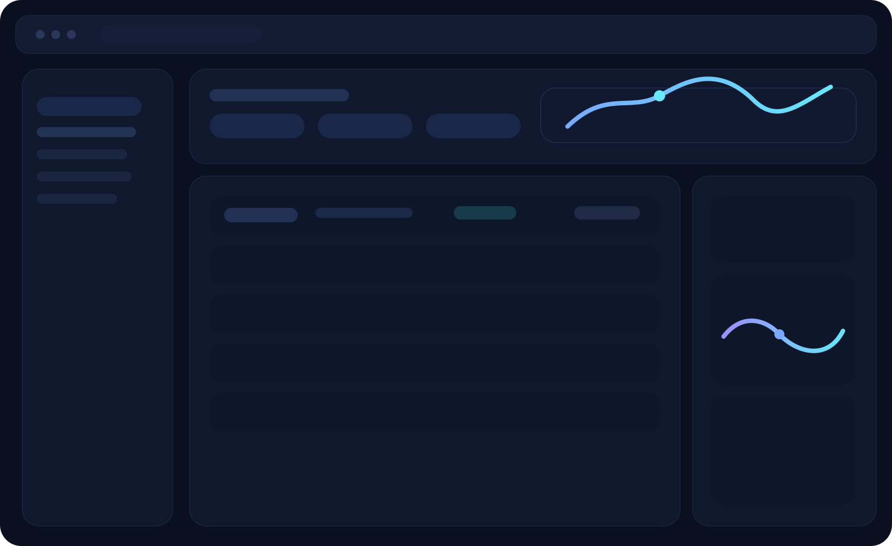

The operating system for product data and supply workflows.
Страница Platform раскрывает ikamdocs как настоящий продукт: модули, слои данных, control center, workflow engine и интерфейс, который продает зрелость решения на уровне enterprise SaaS.

Modules designed as one product surface.
Важный сдвиг в этой версии — все модули выглядят как части одной системы: shared logic, shared security model, shared audit trail и shared operator experience.
Catalog Core
Единый слой SKU, category, variants, specs, attributes, version chains и readiness states.
- Versioned attributes
- Schema governance
- Supplier relationships
Supplier Graph
Поставщики, договоры, реквизиты, импортные источники и SLA обновлений.
- INN and profile enrichment
- Change ownership
- Import accountability
Document Hub
Сертификаты, декларации, инструкции, паспорта и revision-aware attachment model.
- Document linking
- Compliance statuses
- Revision history
QR + Traceability
Генерация, печать, batches, warehouse scans, validity checks и trace events.
- Print-ready flows
- Validation events
- Warehouse operations
Control layer
Policy rules, approvals, role scopes and operational dashboards.
Data layer
Canonical models, relations, versions, projections and downstream contracts.
Execution layer
Queues, retries, export jobs, webhooks and integration workers.
How product surfaces, rules and data execution fit together.
Enterprise UX
Serious interface language: operational clarity, crisp data density and high-trust layout system.
Shared state
Catalog, documents and sync share the same canonical model rather than being separate tools.
Buyer signal
This page tells buyers the product already has internal coherence and execution maturity.
The UI is structured around real operator jobs.
Каждый экран нацелен на конкретную операционную задачу: контроль изменений, проверка комплаенса, выпуск QR, публикация в каналы и разбор ошибок синхронизации.
Control Center
Верхний слой принятия решений: overview по каталогам, health channels, alerts, operator backlog.
Data Workspace
Плотный интерфейс для SKU, attributes, document links, supplier history and review workflows.
Execution Console
Очереди, export jobs, webhook traces, retries, API states and channel-specific failures.